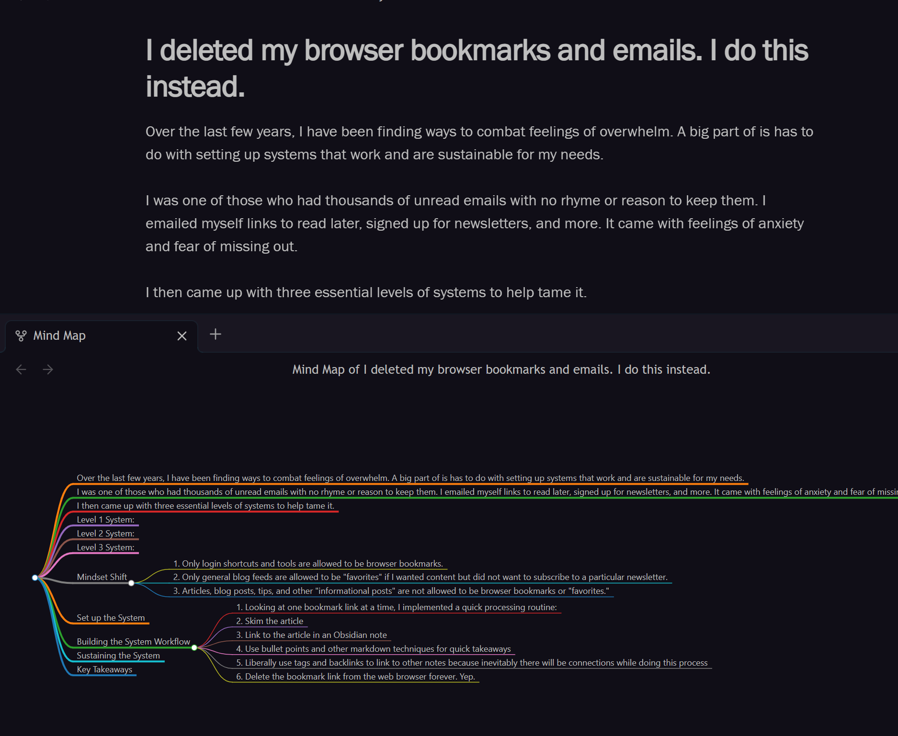

Over the last few years, I have been finding ways to combat feelings of overwhelm. A big part of is has to do with setting up systems that work and are sustainable for my needs.
I was one of those who had thousands of unread emails with no rhyme or reason to keep them. I emailed myself links to read later, signed up for newsletters, and more. It came with feelings of anxiety and fear of missing out.
I then came up with three essential levels of systems to help tame it.
Level 1 System:
I reconsidered whether or not I wanted certain newsletters. If I had a habit of not opening or reading them, I unsubscribed from them. This was a hard reality to face, and it is one of the easiest ways to cut down on overwhelm. But we can take it further than that.
Level 2 System:
I created email rules to automatically move emails into designated folders for more focused processing. For example, if there were coupons that came in newsletters, I used email rules to automatically move those emails to a folder called “Advertisements.” The logic is that good marketing includes catchy subject lines such as “Deal Ends Tonight!” If I saw the messages much later than the perceived urgent timeline, I knew I could delete them en masse without any careful selecting of messages in the folder. And if I caught a deal on time, it was much easier to see.
Another example is to use email rules to move emails to folder based on topic such as “Art” or “Coding.” If I have a topic of interest that I know has a lot of rabbit holes and can be perused at my leisure, I will use email rules to strategically sort those emails to a place where I can go when I have more time to look into them. The key is to not stop there. This helps with the Level 3 System I will describe next.
Level 3 System:
The Level 3 System involves processing any sort of input (including emails) and incorporating them into a Personal Knowledge Management System.
But first, what is a Personal Knowledge Management System?
Wikipedia states that Personal Knowledge Management (PKM) occurs when someone is collecting information to then classify, store, search, retrieve and share as knowledge. Here is a great video that explains it as a way we make sense of the world (Personal knowledge management 2022)(Linking Your Thinking, 2021).
Now that we have a basic understanding of the concept, let me introduce you to how I am learning how to set up a Personal Knowledge Management system using Instapaper, Obsidian, and Dropbox.
Mindset Shift
Prior to the first step in setting up a PKM system involved a mindset shift in how I wanted to change things. Without a mindset shift, I risked not successfully implementing the change I wanted to see. For this effort, I recognized that I did not like having piles of emails, forgotten favorites, and unorganized bookmarks. The “gems” I forwarded to myself via email to look into and act upon were unfortunately lost in the noise. I did not like that.
I then crafted a plan for a future state.
Those who are on a quest to find better ways to capture thoughts and remember things may or may not be familiar with concepts such as a “Brain Dump,” a “Second Brain,” or perhaps even a “Mind Palace.”
I like to think that setting up a system (“Second Brain”) will allow for getting thoughts out of my mind on a regular basis (“Brain Dump”). It also could create an opportunity to relieve stress and remember things better from spatial associations (“Mind Palace”). This was the future state I wanted. (Forte, 2022) (Mathers, 2022)(Mind palace memory technique 2020).
I came up with a series of “Ground Rules” to implement this future state for me. The first few “Ground Rules” designated browser bookmarks and favorites with a much tighter definition:
Only login shortcuts and tools are allowed to be browser bookmarks.
Only general blog feeds are allowed to be “favorites” if I wanted content but did not want to subscribe to a particular newsletter.
Articles, blog posts, tips, and other “informational posts” are not allowed to be browser bookmarks or “favorites.”
I also created tighter rules around emails, which I will come back to in a minute.
Set up the System
I downloaded and installed Obsidian. I connected it to a folder on Dropbox to allow for backups. I picked out a theme I liked as well as a couple plug-ins that highlight code syntax and create visual mind maps of notes. Beyond that, I stopped customizing at that time and moved on to the heavy-lifting of the system setup.
Building the System Workflow
Once I decided upon reasonable “Ground Rules” for emails and bookmarks, I went to work. I started a new folder in Obsidian for each topic I was interested in. I then started new notes in each folder.
Looking at one bookmark link at a time, I implemented a quick processing routine:
Skim the article
Link to the article in an Obsidian note
Use bullet points and other markdown techniques for quick takeaways
Do not take notes throughout reading. Only record the few things you may implement as action items.
Liberally use tags and backlinks to link to other notes because inevitably there will be connections while doing this process
Delete the bookmark link from the web browser forever. Yep.
I repeated this routine for upwards of 40 times, quickly deleting links left and right. Pretty soon, I was left with a couple key shortcut logins and some shortcuts for work.
I did a very similar routine with my emails. As I mentioned earlier, good email marketing will draw you in with catchy subject lines. I relied on that concept to either delete the unfortunately uninteresting email newsletters immediately or follow a similar routine that I had for the bookmarks.
The fear of missing out had an initial hit but faded throughout the process. When it comes down to it, would you rather have so many emails captured that you never read, or would you want to create something extra special out of the few things you did read?
By this point, I had several folders and notes captured within Obsidian. I started seeing connections between various things I wanted to try and articles I read. The mind map visual from an Obsidian plug-in is a nice touch. As I took notes, I realized that I was creating action items. The action items that had two or more connections resulted in some neat projects I really want to build. None of this would have happened if these things were still sitting in my emails and bookmarks.

Sustaining the System
Here is where Instapaper comes into play.
After signing up for an account, I made sure to make it an available option to “Share” links to.
On my phone I am able to take links and “Share” them to Instapaper and move on with my day. What that does is create a “queue” where I can read articles and then process into takeaways for my Obsidian notes. Once I’m done reading an article on Instapaper, I archive it.
Finally… great ideas are no longer sent to a forgotten pit of doom in my email inbox. From there, I make it a habit to regularly process the articles to gather my takeaways. A weekly process is typically a good time frame. If you go too much longer than that, then you’ll be back in the same spot as you were before. A quick course correct is to purge all as described above in the Building the System Workflow section of this post.
Key Takeaways
This was a high-level overview of the how and why with regard to how I am learning to set up a Personal Management System. I state that I am learning because tomorrow I may implement a tweak in my systems upon new information and understanding. And to end this blog post, that was the whole point all along.
--
Sources Cited
Forte, T. (2022, September 14). 12 steps to build a second brain. Forte Labs. Retrieved December 12, 2022, from https://fortelabs.com/blog/12-steps-to-build-a-second-brain/
Linking Your Thinking. (2021, April 19). What is PKM? what is personal knowledge management? YouTube. Retrieved December 12, 2022, from https://youtu.be/Q2WBHyqRsxA
Mathers, C. (2022, March 9). 5 steps to do a brain dump (with templates). Develop Good Habits. Retrieved December 12, 2022, from https://www.developgoodhabits.com/brain-dump/
Mind palace memory technique. Memorise. (2020, September 13). Retrieved December 12, 2022, from https://memorise.org/memory-training/mind-palace-memory-technique
Perry, A. (2022, December 6). Learn do become. Learn Do Become. Retrieved December 12, 2022, from https://learndobecome.com/
Wikimedia Foundation. (2022, September 24). Personal knowledge management. Wikipedia. Retrieved December 12, 2022, from https://en.wikipedia.org/wiki/Personal_knowledge_management